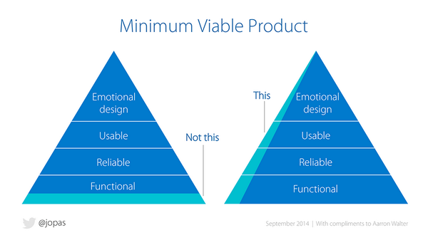
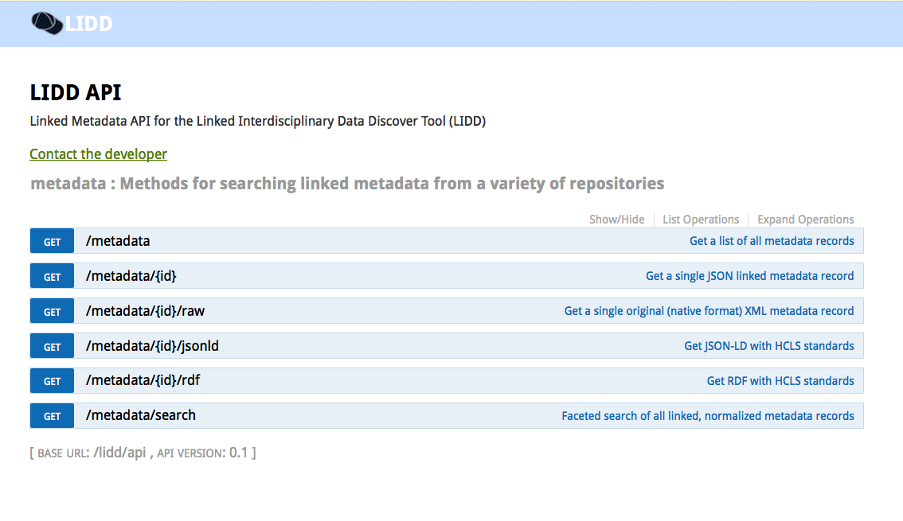
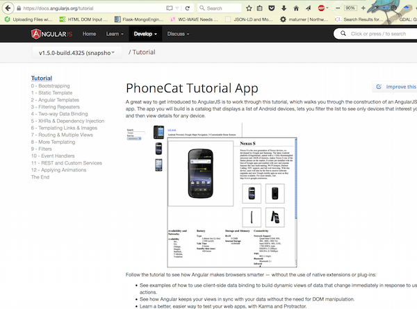

Matthew Turner, Rebecca Koskela, Mary Vardigan, David Dubin, Lucas Sheneman
https://mt.northwestknowledge.net/rda-project-shareAim for the chopping block
from "The Writing Life" by Annie Dillard
Rapid prototyping, fail fast, with "minimum viable products"
As a natural resource manager, I need to evaluate scientific data, the sentiments of my community, and any other relevant data, in order to choose a course of action for how to protect an endangered species while allowing public access to a particular resource
With Western Consortium for Watershed Analysis, Visualization, and Exploration (ID, NV, NM)
https://mt.northwestknowledge.net/lidd/api
Documentation and examples above built with Swagger
"international effort to create a standard to describe statistical and social science data"
...
Please see geographic coverage.
France
Global
Paris
...
Parsing guided by the documentation hosted by the Knowledge Network for Biocomplexity
...
1988
...
...
1953
2006
...
...
Fort Keogh
-105.8833000
-105.8833000
46.4333333
46.4333333
...
...
Please see geographic coverage.
France
Global
Paris
...
Examples:
Coverage="1995-1996"
Coverage="Boston, MA"
Coverage="17th century"
Coverage="Upstate New York"
class NormalizedMetadata(db.Document):
"""
Model served by the API to consumers. It has been normalized: parsed from
whatever the metadata's native format and extracted to the currently
supported terms. Imported to ../parsers for creating app-ready normalized
metadata.
"""
raw = db.StringField(required=True)
title = db.StringField(required=True)
start_datetime = db.DateTimeField(required=True)
end_datetime = db.DateTimeField(required=True)
identifier = db.StringField(max_length=100)
# allow a list of standards in case they do indeed meet multiple standards
metadata_standard = db.ListField(
db.EmbeddedDocumentField('MetadataStandard')
)
...
from app.models import NormalizedMetadata
...
def make_normalized_icpsr(icpsr_file=None):
raw = RawICPSR(icpsr_file)
date_range = NormalizedDateEntry(raw)
geo_center = _extract_geo_center(raw)
start_date = date_range.start_time
end_date = date_range.end_time
title = _extract_title(raw)
abstract = _extract_abstract(raw)
identifier = _extract_identifier(raw)
doc = dict(
raw=raw.text,
title=title,
abstract=abstract,
identifier=identifier,
geo_center=geo_center,
start_datetime=start_date.isoformat(),
end_datetime=end_date.isoformat(),
metadata_standard=[{
'name': 'DDI', 'reference': DDI_DOC_URL
}]
)
# the normalized context is common among all records, by definition
document_str = json.dumps(doc=normalized,
native_context=DDI_NORMALIZED_FIELDS
)
return NormalizedMetadata.from_json(document_str)
"a guide to indicate what are the essential metadata, and the manner in which we can express it"
Unfortunately HCLS does not explicitly include geographical information.
{
"@context":
{
"cito": "http://purl.org/spar/cito/",
"dbpedia": "http://mappings.dbpedia.org/index.php/OntologyProperty:",
"dbpedia:EndDateTime":
{
"@type": "xsd:dateTime",
"rdfs:comment@en": "ISO 8601 formatted start date and time",
"rdfs:label@en": "start date and time"
},
"dbpedia:StartDateTime":
{
"@type": "xsd:dateTime",
"rdfs:comment@en": "ISO 8601 formatted start date and time",
"rdfs:label@en": "start date and time"
},
"dcat": "http://www.w3.org/ns/dcat#",
"dct": "http://purl.org/dc/terms/",
"dctypes": "http://purl.org/dc/dcmitype/",
"foaf": "http://xmlns.com/foaf/0.1/",
"freq": "http://purl.org/cld/freq/",
"idot": "http://identifiers.org/terms#",
"lexvo": "http://lexvo.org/ontology#",
"lidd": "https://mt.northwestknowledge.net/lidd/terms#",
"pav": "http://purl.org/pav/",
"prov": "http://www.w3.org/ns/prov#",
"rdf": "http://www.w3.org/1999/02/22-rdf-syntax-ns#",
"rdfs": "http://www.w3.org/2000/01/rdf-schema#",
"sd": "http://www.w3.org/ns/sparql-service-description#",
"vann": "http://purl.org/vocab/vann/",
"void": "http://rdfs.org/ns/void#",
"xsd": "http://www.w3.org/2001/XMLSchema#"
}, //end of context
"dbpedia:EndDateTime": "1997-11-08T00:00:00",
"dbpedia:StartDateTime": "1997-07-08T00:00:00",
"dcat:accessURL": "https://mt.northwestknowledge.net/lidd/api/metadata/55ef8b96933da5757a9c83eb",
"dcat:downloadURL": "https://mt.northwestknowledge.net/lidd/api/metadata/55ef8b96933da5757a9c83eb/raw",
"dct:title": "Experiment to Enhance the Reporting of Drug Use by Arrestees in Cleveland, Detroit, and Houston, 1997",
"void:dataDump": "https://mt.northwestknowledge.net/lidd/api/metadata/55ef8b96933da5757a9c83eb/rdf"
}
Implemented as class method of NormalizedMetadata
from pyld import jsonld
...
class NormalizedMetadata:
...
def to_jsonld(self):
"""
Use metadata_standard.specification_root to build an expanded jsonld
metadata record
"""
namespaced = {
'dct:title': self.title,
'dbpedia:StartDateTime': self.start_datetime.isoformat(),
'dbpedia:EndDateTime': self.end_datetime.isoformat(),
'dcat:accessURL':
'https://mt.northwestknowledge.net'
'/lidd/api/metadata/{}'.format(self.id),
'dcat:downloadURL':
'https://mt.northwestknowledge.net'
'/lidd/api/metadata/{}/raw'.format(self.id),
'void:dataDump':
'https://mt.northwestknowledge.net'
'/lidd/api/metadata/{}/rdf'.format(self.id)
}
context = HCLS_PLUS_CONTEXT
return jsonld.compact(namespaced, context, {'expandContext': context})
REST - REpresentational State Transfer. Important for us in the design of our API endpoints, or resources.
from flask import Flask
app = Flask(__name__)
@app.route('/')
def hello_world():
return 'Hello World!'
if __name__ == '__main__':
app.run()
...save as hello.py and run with python
$ python hello.py
* Running on http://127.0.0.1:5000/
Learn about Angular plus unit tests, end-to-end testing, and client-side dependency management.
